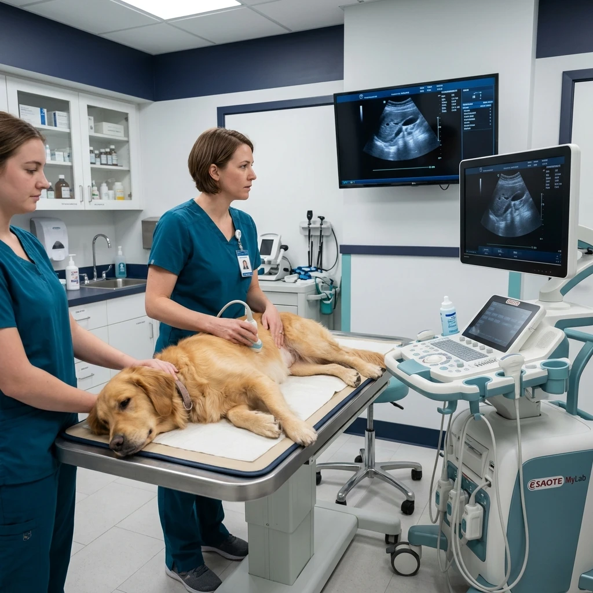
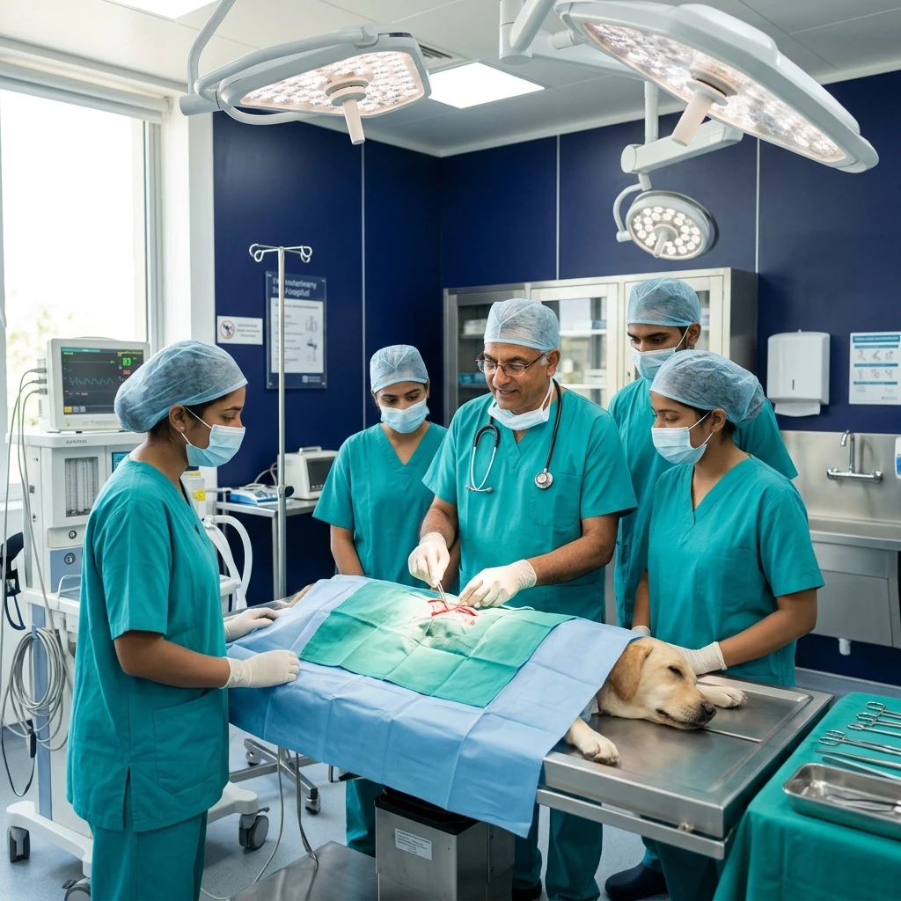
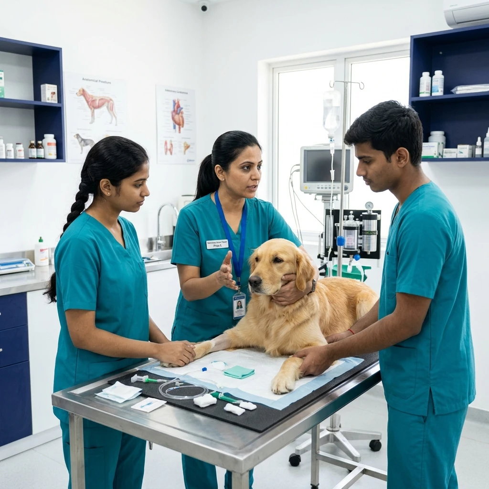

Practical Veterinary Programs & Workshops
From intensive 4-week flagship skill-up tracks to focused surgical and radiology masterclasses, explore accredited clinical modules engineered to build genuine manual confidence and diagnostic precision.

Select Your Learning Track
Structured hands-on modules designed for BVSc interns, fresh graduates, practicing clinicians, and vet assistants.

Veterinary Skill-Up Program
Comprehensive 4-week clinical mastery module covering soft tissue surgery, digital radiology reading, ultrasound scanning, and emergency triage.

Soft Tissue Surgery Track
Intensive hands-on procedural workshop covering sterile OR setup, tissue handling, suture patterns, spay/neuter, and intestinal cystotomy closures.

Radiology & Ultrasound Masterclass
Systematic abdominal & thoracic radiograph interpretation alongside hands-on abdominal ultrasound probe handling and FAST scanning.

Pet Emergency & Critical Care
Handling shock, toxic ingestion, cardiac arrest, fluid resuscitation, and multiparameter vitals monitoring.

Vet Nurse Foundation Certificate
Foundational practical training for clinic assistants and paravet staff covering animal restraint and sterile OR scrub prep.

Pet Emergency First Aid Workshop
Designed for pet parents and rescuers to stabilize pets during life-threatening choking, bleeding, or heat stroke emergencies.